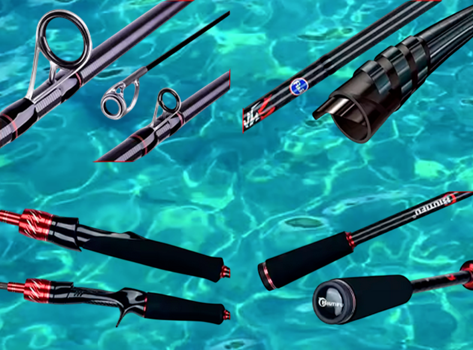

La BIUTIFU Symphons Traveller es una caña diseñada específicamente para pescadores que necesitan máxima portabilidad sin renunciar a sensibilidad ni potencia. Forma parte de nuestra selección de componentes de pesca orientados a viajes y pesca versátil.
Fabricada en carbono T800 de alta elasticidad y equipada con anillas FUJI, ofrece una acción rápida y un lance suave tanto en versiones spinning como casting. Es una opción ideal para combinar con carretes compactos y sedales trenzados finos.
La BIUTIFU symphons Traveller es una caña muy bien pensada para pescadores que viajan frecuentemente o buscan un equipo polivalente. Su acción rápida, el uso de carbono T800 y las anillas FUJI la sitúan por encima de muchas cañas de viaje de su rango.
Combinada con un carrete ligero y un sedal trenzado fino, ofrece un conjunto equilibrado para spinning ligero, rock fishing y pesca general.
Valoración: ★★★★☆ (4,5/5)
Gracias a su tamaño plegado inferior a 57 cm, esta caña es perfecta para viajes en avión, coche o transporte público. Su estructura multisección y materiales de calidad garantizan durabilidad y buen rendimiento en múltiples escenarios de pesca.